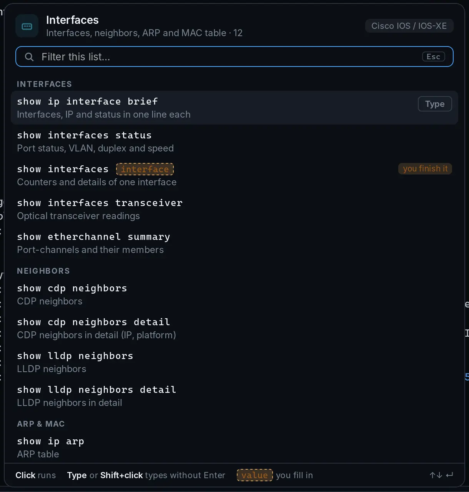

Command lists
The right command, one click away
ZapTerm detects the platform from the prompt and shows that vendor's command lists
under the terminal: interfaces, routing, BGP, OSPF, IPsec, HA, security, debug…
Click to run, or press Type to put the command at the prompt and finish it yourself.
Placeholders like <interface> are left for you to fill in.
- Lists for Cisco IOS & IOS XR, Arista, Junos, FortiGate, Linux and PowerShell
- Filter any list as you type
